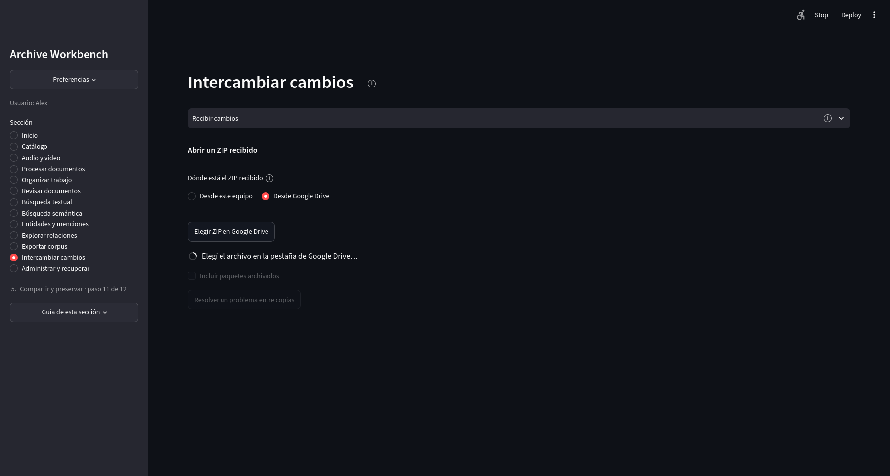
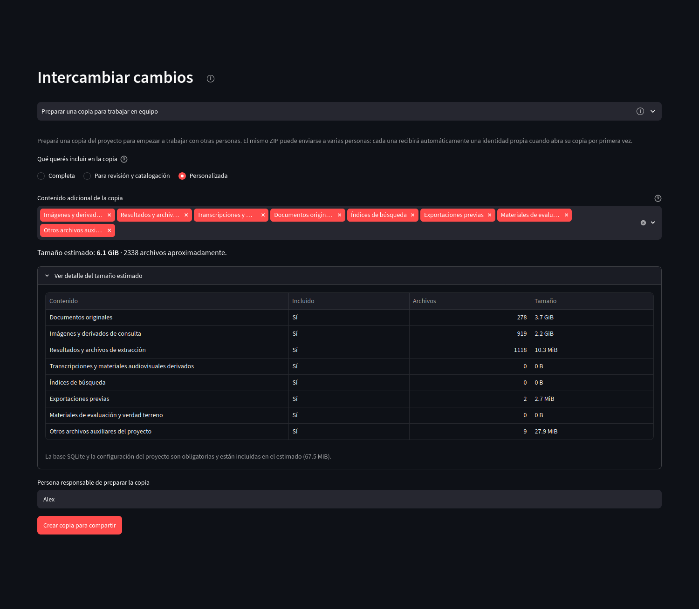

Resultados y preservación
Intercambiar cambios
Dos personas pueden trabajar sobre copias locales del mismo proyecto sin abrir una base SQLite compartida. El intercambio se realiza mediante archivos ZIP que la aplicación inspecciona antes de incorporar cambios.

Abrir captura completa
Envío de cambios
Enviar cambios compara la copia actual con el último punto compartido. Si existen cambios posteriores, prepara un paquete incremental; si no los hay, la sección informa que no hay trabajo nuevo para empaquetar.
Recepción de cambios
Un ZIP puede elegirse desde la computadora o desde Google Drive. La aplicación identifica el tipo de paquete, verifica su compatibilidad y muestra qué acción corresponde antes de modificar la copia actual. Un paquete incremental se compara con el estado local mediante una simulación; los conflictos que requieren decisión se resuelven antes de aplicar cambios.
{kind=link}

Abrir captura completa
Preparación de una copia de trabajo
Esta tarea crea una copia transportable para iniciar trabajo distribuido. La base SQLite y la configuración forman parte obligatoria de la copia. Los documentos originales, derivados, resultados de extracción, transcripciones, índices, exportaciones y otros grupos de archivos pueden incluirse según el perfil de copia.
{kind=link}

Abrir captura completa
Copias completas y conflictos excepcionales
Una copia completa recibida puede adoptarse automáticamente dentro de un proyecto vacío después de verificarse y crear una copia de seguridad. Si el proyecto actual ya contiene trabajo, la copia completa no se mezcla de manera automática: se usa el intercambio incremental o las herramientas excepcionales de Resolver un problema entre copias.
Esas herramientas permiten reemplazar el trabajo editable completo con vista previa y backup previo, o reconectar dos copias que contienen el mismo trabajo pero perdieron el reconocimiento de su punto de partida común. No forman parte del recorrido normal.